Photography
moments, energy, atmosphere
Images that capture people, places, and feeling.
Photography is one of my favorite ways to tell stories visually. I’m drawn to capturing atmosphere, personality, and details that make a moment feel memorable.
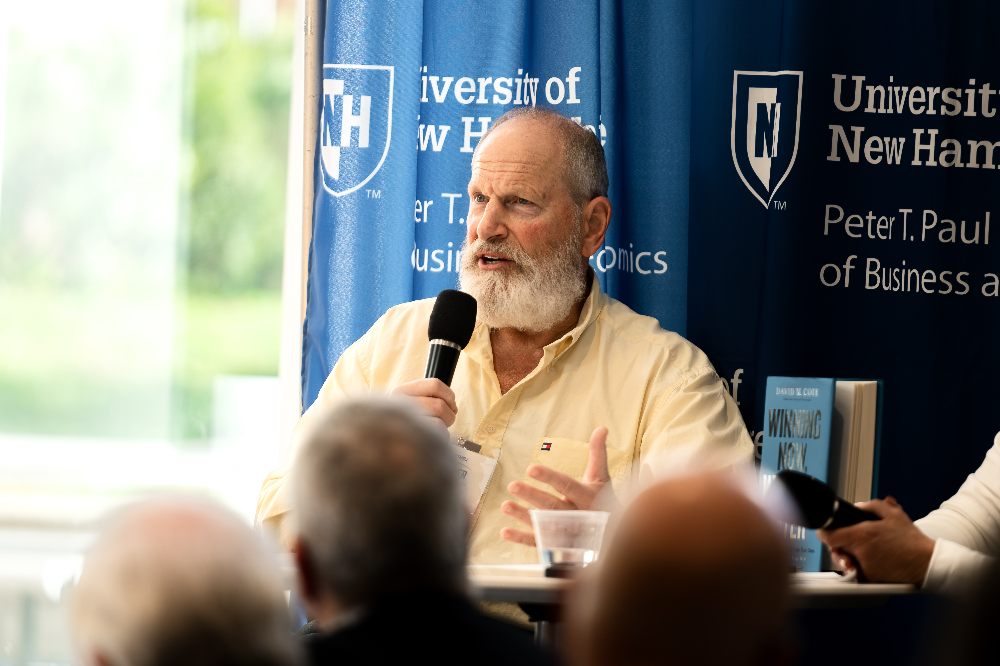
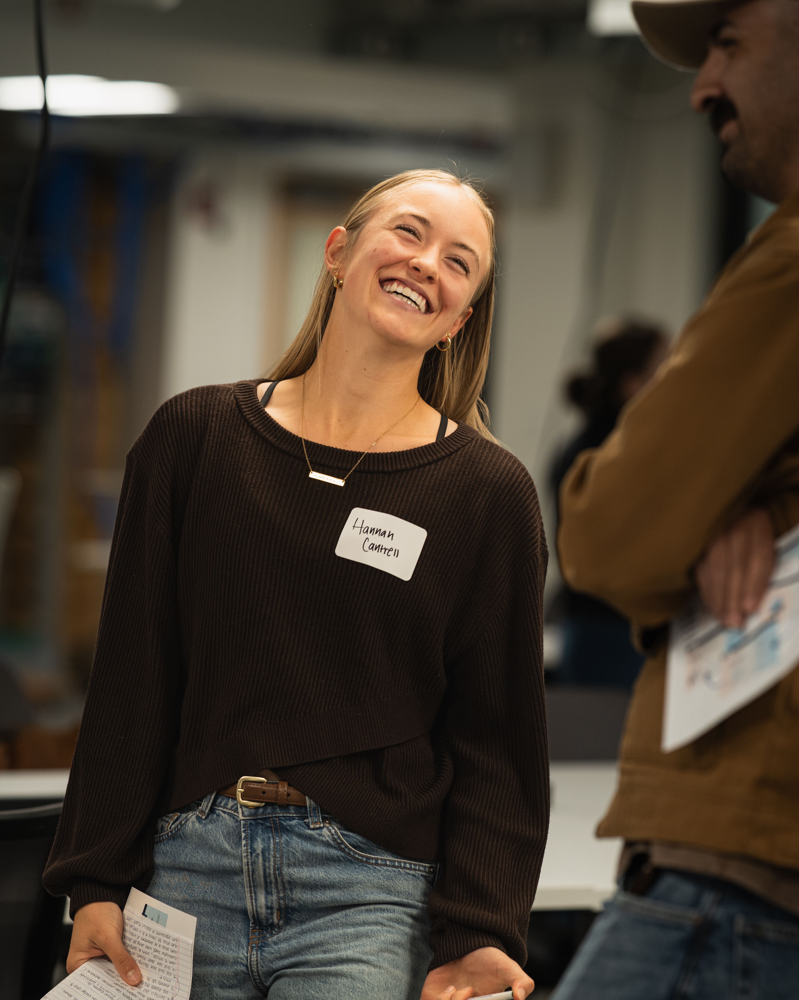
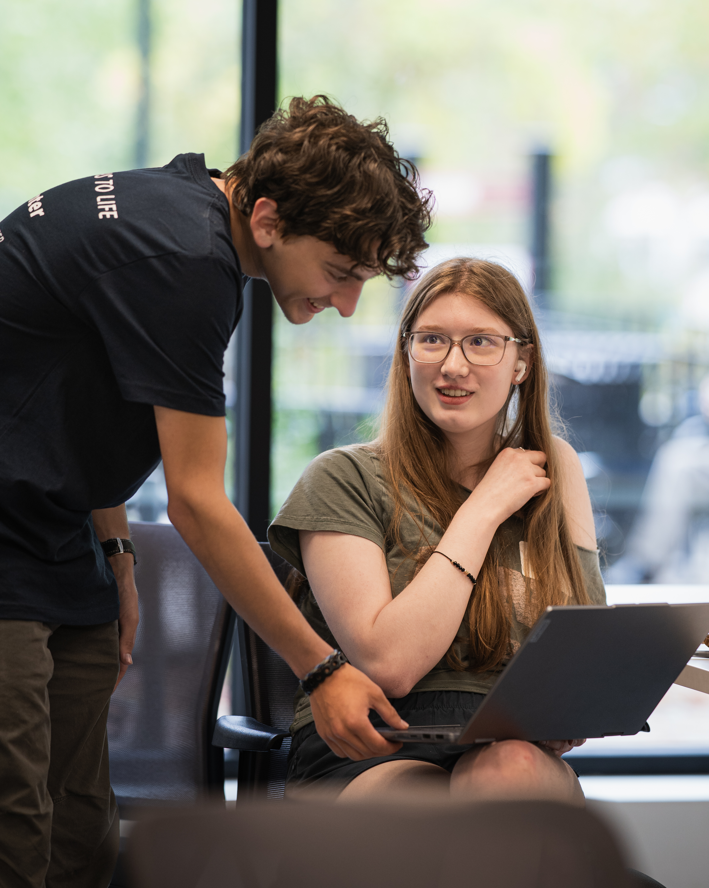
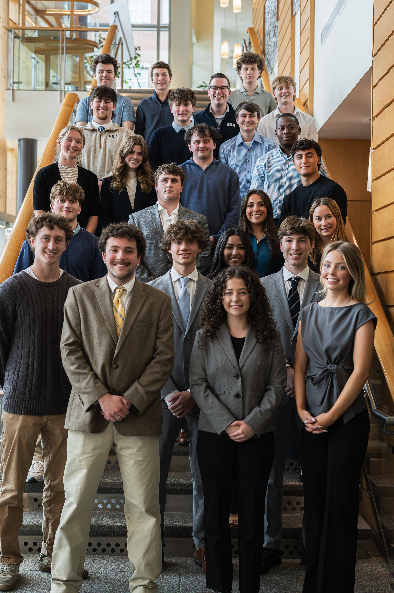
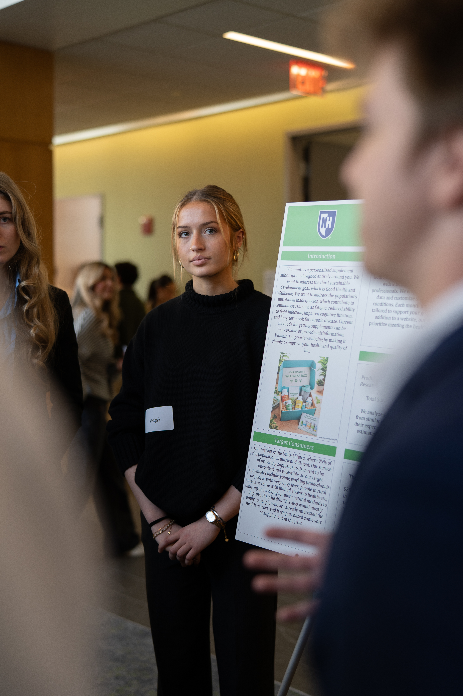
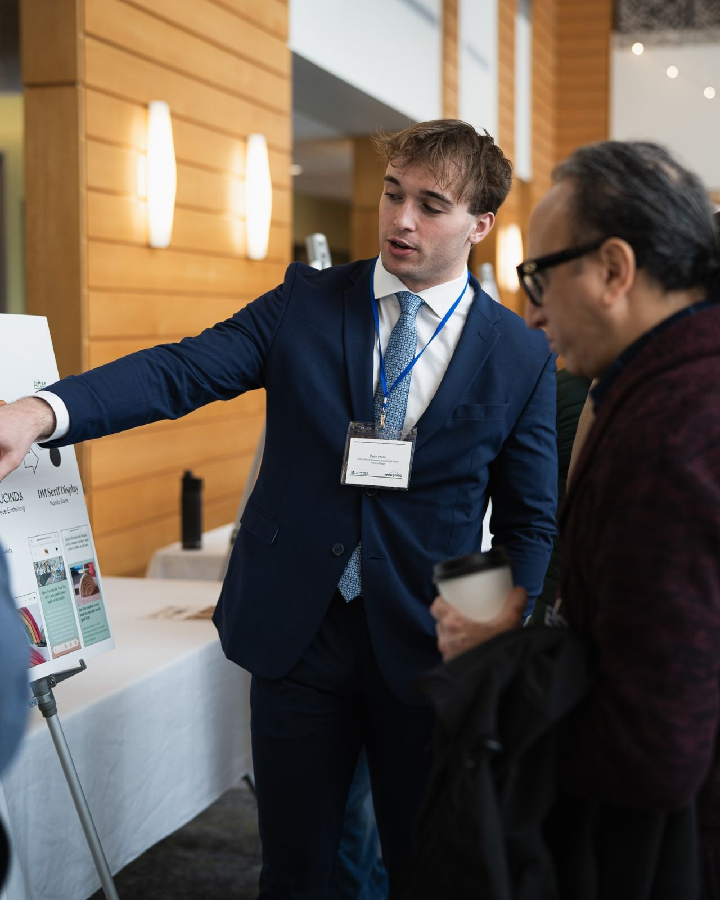
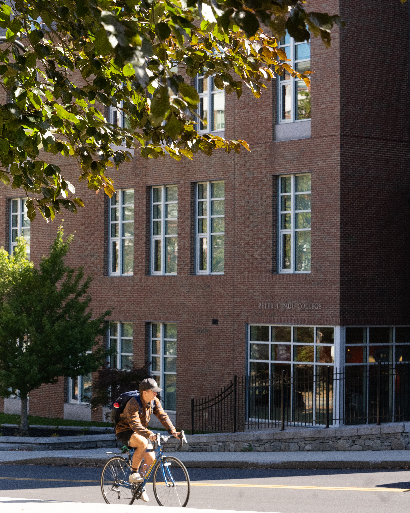
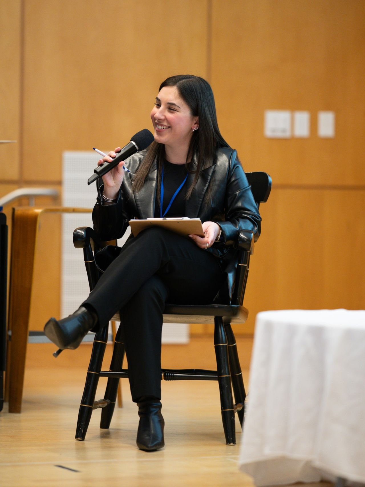
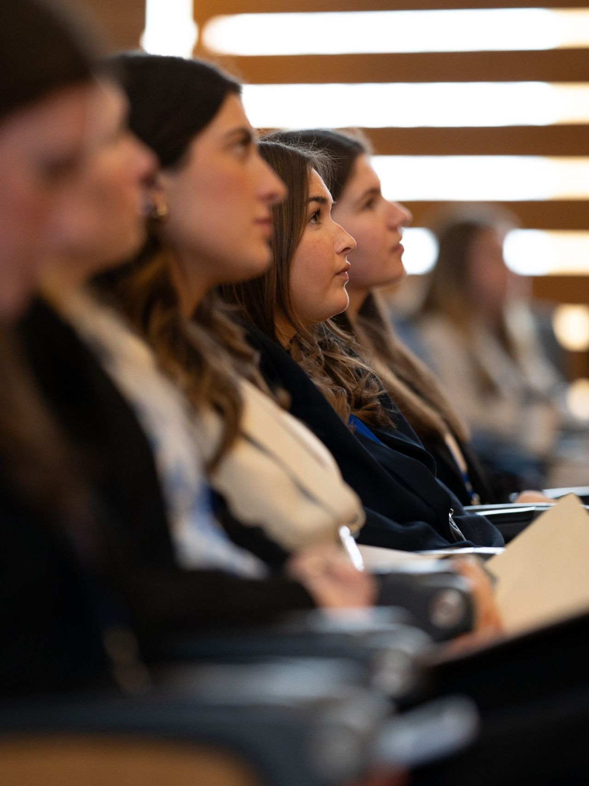
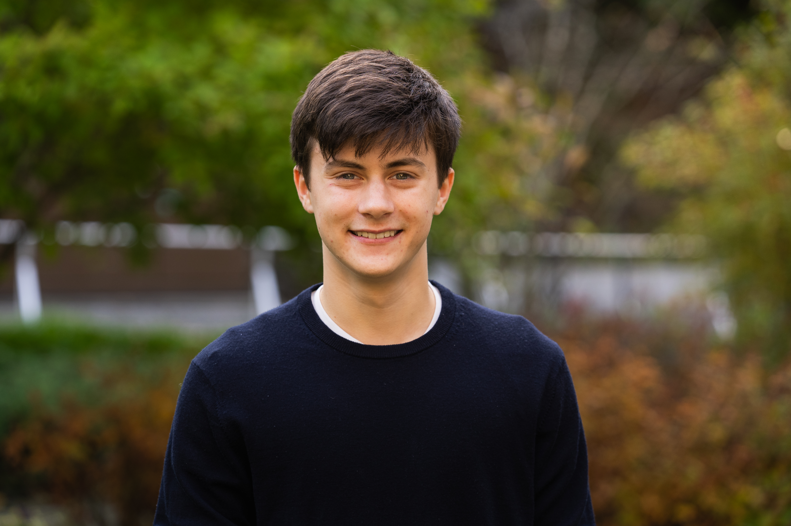

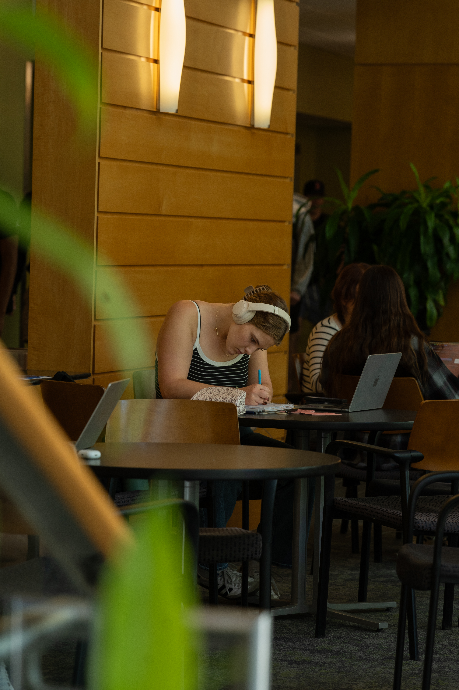